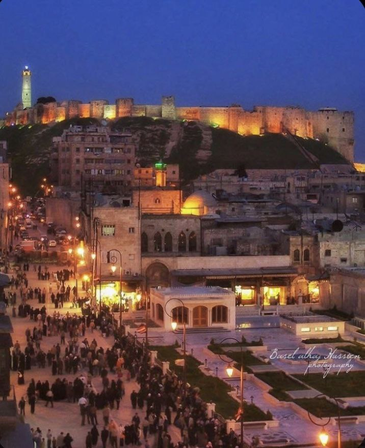
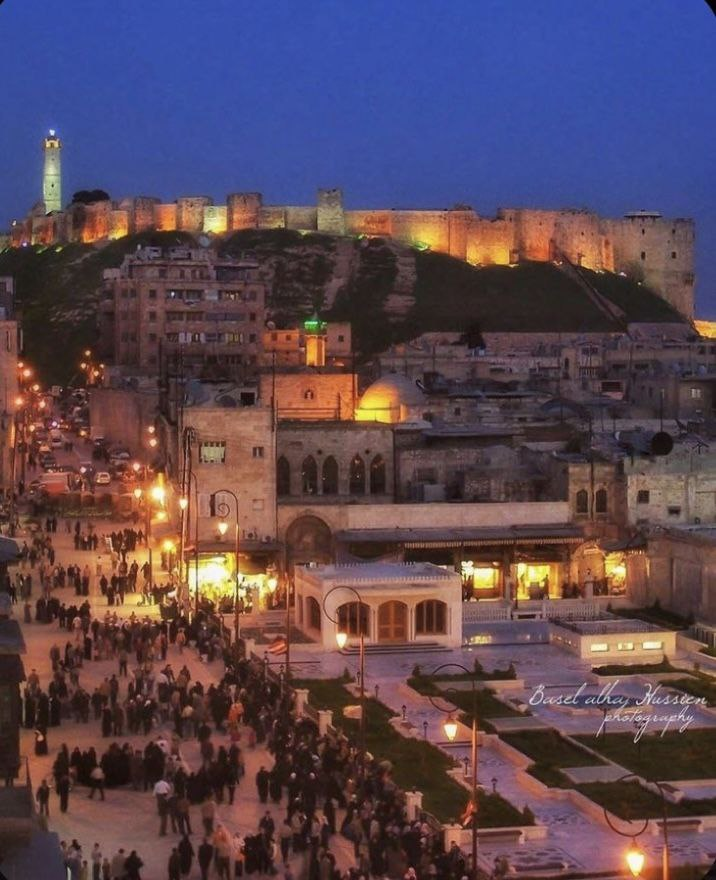

أشهر الوجهات السياحية


دمشق، سوريا
أقدم عاصمة مأهولة في التاريخ، مدينة الياسمين بسوقها الحميدية ومواقعها العريقة.
اكتشف المزيدمسقط، عمان
عاصمة الجمال العماني، تجمع بين الجبال الوعرة والشواطئ الهادئة والأسواق التقليدية.
اكتشف المزيد
الجزائر، الجزائر
مدينة الجزائر البيضاء، تطل على البحر الأبيض المتوسط وتشتهر بقصباتها العتيقة.
اكتشف المزيدجيبوتي، جيبوتي
موقع استراتيجي على البحر الأحمر، معروف ببحيراته المالحة ومناظره الطبيعية.
اكتشف المزيد
أنواع السياحة
سياحة الشواطئ
استمتع بأجمل الشواطئ العربية
سياحة المغامرات
مغامرات لا تنسى في الطبيعة
سياحة تاريخية
اكتشف الحضارات العريقة
سياحة غذائية
تذوق ألذ المأكولات العربية
سياحة دينية
زيارة الأماكن المقدسة
سياحة علاجية
الاستجمام والعلاج بالمياه
آراء الزوار

"لقد كانت تجربة رائعة في دبي، الموقع ساعدني في التخطيط لرحلتي بشكل ممتاز!"
سارة محمد

"زيارة البتراء كانت حلم حياتي، وشكرًا للموقع على المعلومات الدقيقة والتوصيات المفيدة."
أحمد خالد

"مراكش مدينة ساحرة، ودليل السفر الذي قدمه الموقع كان مفيدًا جدًا في تجربتي."
نورا عبدالله


 
